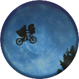

CAZAFANTASMAS
es una película estadounidense de 1984 del género comedia con algunos toques de ciencia ficción, producida y dirigida por Ivan Reitman. La película fue un éxito de taquilla y se registró como la comedia más taquillera de la década. Su banda sonora fue compuesta por Elmer Bernstein. La canción "Ghostbusters" de Ray Parker Jr. ganó el premio BAFTA 1985 a la mejor canción original
TOP GUN
es una película estadounidense de acción, drama y romance de 1986, dirigida por Tony Scott. Gran parte del éxito de la película se debe a las espectaculares escenas en el aire combinadas con una banda sonora emocionante, destacando el tema «Danger Zone», de Kenny Loggins
BEETLEJUICE
es una película estadounidense dirigida por Tim Burton y estrenada en 1988. Es una comedia de terror, que mezcla los géneros del humor e historia de fantasmas, y está protagonizada por Beetlejuice, un personaje inventado por Burton. La película dio lugar a una serie de televisión de animación, que el mismo Burton produjo.

VOLVER AL FUTURO
es una película estadounidense de ciencia ficción y comedia de 1985 dirigida y escrita por Robert Zemeckis. Relata las aventuras de Marty McFly, un adolescente rebelde e impulsivo que vive con sus padres y viaja accidentalmente al pasado desde 1985, su época, a 1955, la época en que sus padres se conocieron.
E.T.
es una película estadounidense de ciencia ficción de 1982 dirigida por Steven Spielberg. La cinta está basada en un amigo imaginario del propio director, creado tras el divorcio de sus padres. En 1980, Spielberg conoció a Mathison y empezaron a desarrollar la historia, tras el proyecto estancado Night Skies.
SCARFACE
es una película estadounidense de drama criminal de 1983 dirigida por Brian De Palma y escrita por Oliver Stone. Se trata de una nueva versión del filme del mismo nombre de 1932 y cuenta la historia del refugiado cubano Tony Montana (Al Pacino), que llega sin un centavo a Miami en la década de 1980 y se convierte en un poderoso narcotraficante